Unsere Modelle
Sonnenschutz & Markisen – unsere Modelle
Alle Produkte werden maßgefertigt, CE-zertifiziert und mit Statiknachweis geliefert.

Aufdachbeschattung
Die Aufdachmarkise wird oberhalb des Terrassendachs montiert und verhindert, dass sich das Dach aufheizt. Sie bietet zuverlässigen Schutz vor Sonne und Blendung – ohne den Blick nach draußen zu beeinträchtigen. Mit Somfy-Antrieben aus eigener Herstellung.
- Montage auf dem Terrassendach – bis 6,5 x 6 m (39 m²) je nach Modell
- Verhindert Aufheizen des Dachs · Windwiderstandsklasse 3
- Somfy-Antrieb, elektrisch steuerbar
- Viele Stoffe und Farben
- 5 Jahre Herstellergarantie (VD AluSysteme)
- Kompatibel mit TDS und SkyView
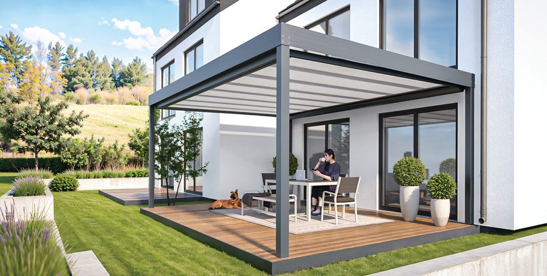
Unterdachbeschattung
Die Unterdachmarkise wird unterhalb des Terrassendachs montiert – ideal um direktes Sonnenlicht zu filtern und eine angenehme Atmosphäre zu schaffen. Platzsparend, elegant und einfach zu bedienen.
- Montage unter dem Terrassendach – bis 6,5 x 6 m (39 m²) je nach Modell
- Filtert direktes Sonnenlicht · Windwiderstandsklasse 3
- Elektrisch oder manuell
- Verschiedene Stoffe wählbar
- 5 Jahre Herstellergarantie (VD AluSysteme)
- Platzsparende Lösung
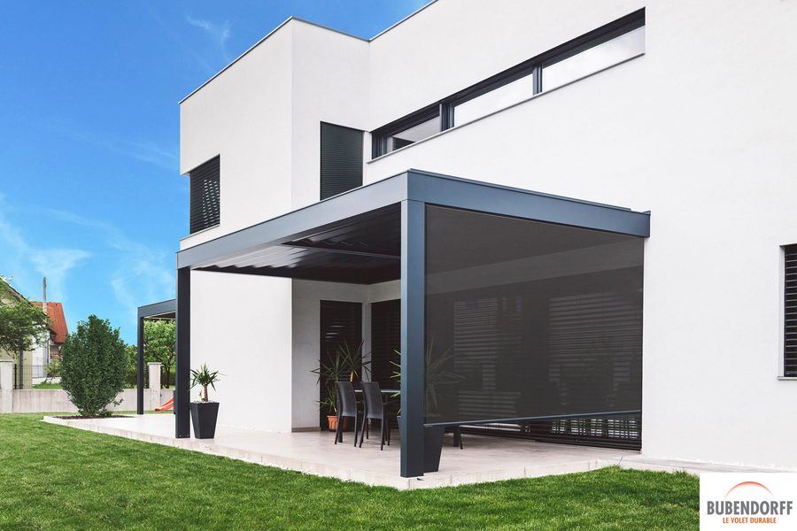
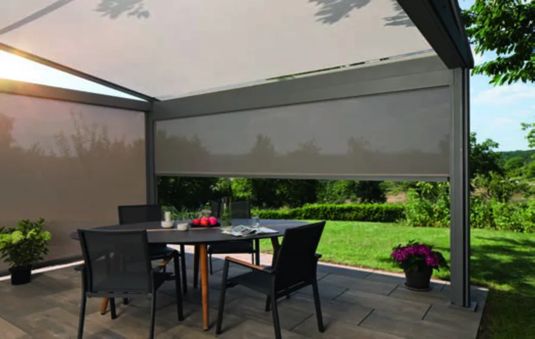
1 / 2 Seitliche MontageSenkrechtbeschattung
Senkrechtmarkisen schützen nicht nur seitlich vor tiefstehender Sonne, Wind und neugierigen Blicken – dieselbe Technik lässt sich ebenso als Stirnbeschattung an der Vorderseite einer Terrassenüberdachung montieren. So schließen Sie auch die offene Front komplett ab, statt nur die Seiten. Elektrisch steuerbar, stabil und langlebig.
- Seitlicher Sonnen- und Windschutz – bis 6 x 3 m, ZIP-Variante windstabil bis 150 km/h
- Stirnbeschattung an der Vorderseite für vollständigen Rundum-Schutz
- Ideal als Sichtschutz · optional mit Solarantrieb & LED
- Elektrisch steuerbar
- Reißfeste, UV-beständige Stoffe
- 5 Jahre Herstellergarantie (VD AluSysteme)
- Passend zu allen Überdachungen

Velaris
Einstellbare Aluminium-Lamellen die Licht, Sichtschutz und Belüftung auf einmal steuern – per Knopfdruck. Als Seitenelement, als Dach oder beides. Mehrere Elemente kombinierbar, platzsparendes Kaskadensystem.
- Individuell einstellbarer Neigungswinkel
- Farben: Reinweiß, Graualuminium, Weißaluminium, Anthrazit oder Echtholzoptik
- Einseitig oder symmetrisch öffnendes Kaskadensystem
- Modular erweiterbar für große Flächen
- Als Seitenelement oder eigenständige Konstruktion
- Integrierbar in Terrassenüberdachungen & Lamellendächer
- Motorisierung auf Wunsch verfügbar
Markisen und Beschattungen
Alle Markisen-Modelle im Überblick
Ob Kassettenmarkise, Gelenkarmmarkise, Wintergartenmarkise, Senkrechtmarkise oder Sonnensegel – wir bieten Ihnen die komplette Bandbreite an Beschattungslösungen unseres Herstellers VD AluSysteme. Sprechen Sie uns an, welches Modell zu Ihrer Terrasse, Ihrem Wintergarten oder Ihrer Fassade passt.
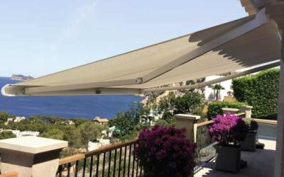
Kassettenmarkise Terrea 580
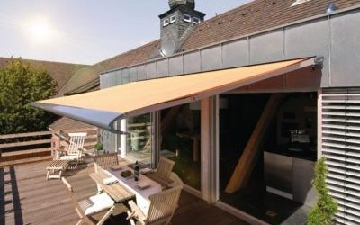
Kassettenmarkise Terrea 550
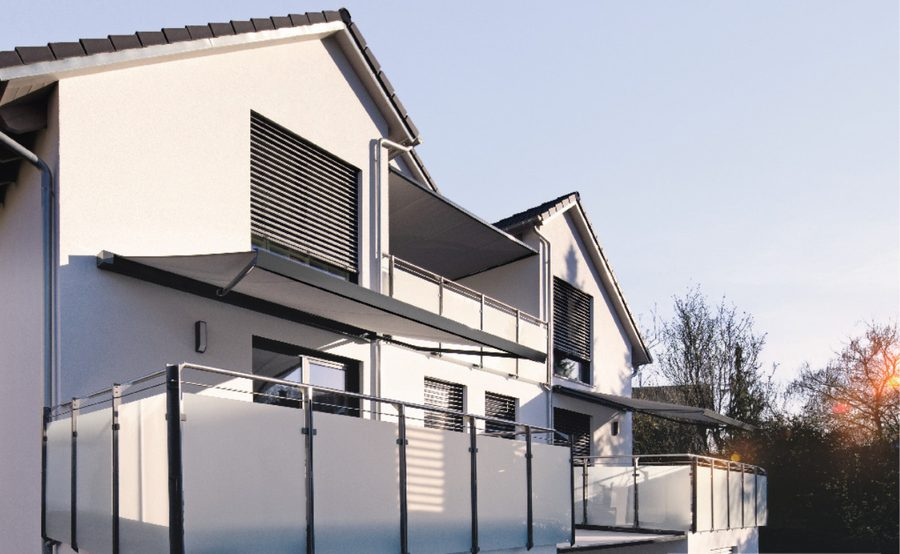
Kassettenmarkise Terrea K50
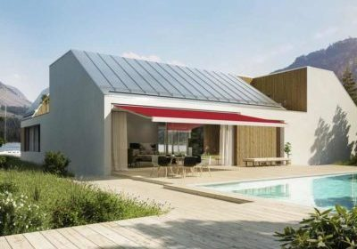
Kassettenmarkise Terrea K70
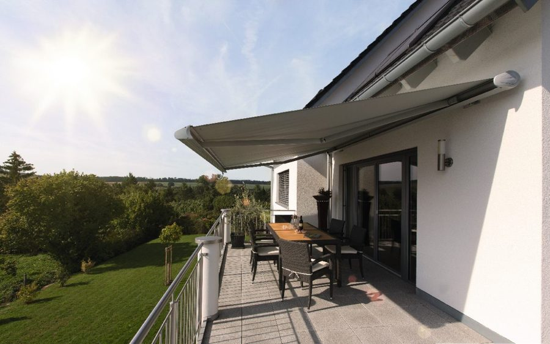
Kassettenmarkise Terrea K60
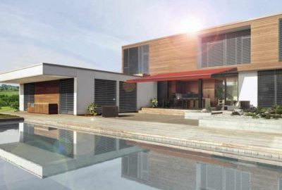
Gelenkarmmarkise Terrea H60 (halbgeschlossen)
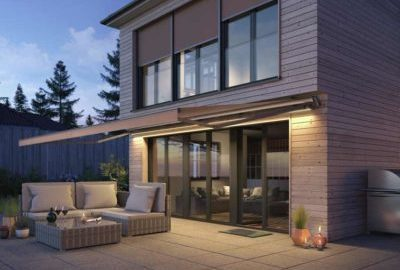
Gelenkarmmarkise Terrea G60 (offen)
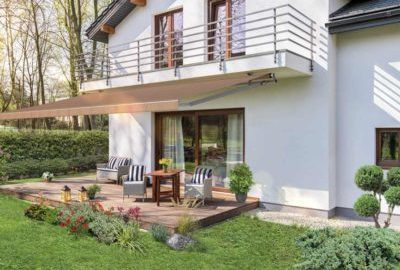
Gelenkarmmarkise Terrea 530
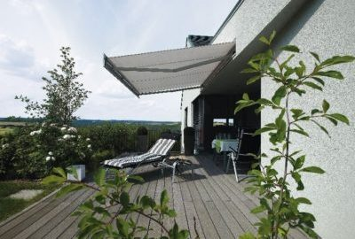
Gelenkarmmarkise Terrea 700S
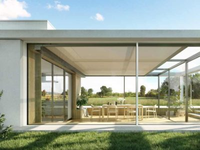
Wintergartenmarkise Climara W10
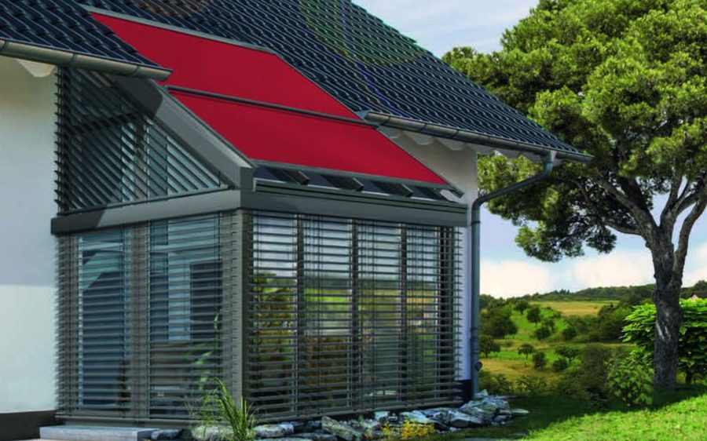
Wintergartenmarkise Climara W20
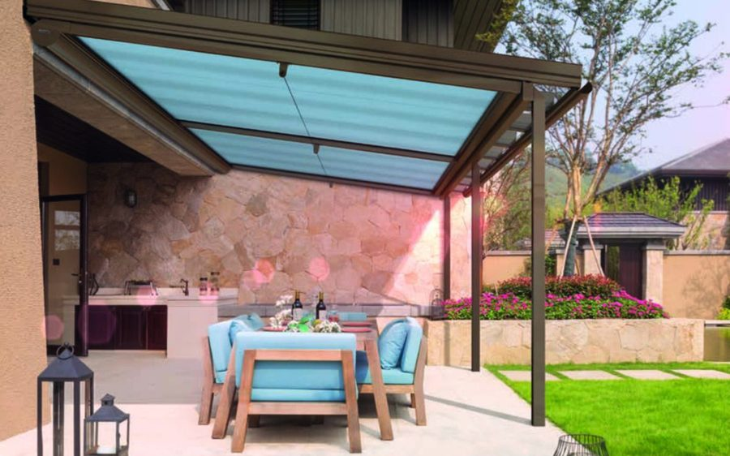
Wintergartenmarkise Climara W9
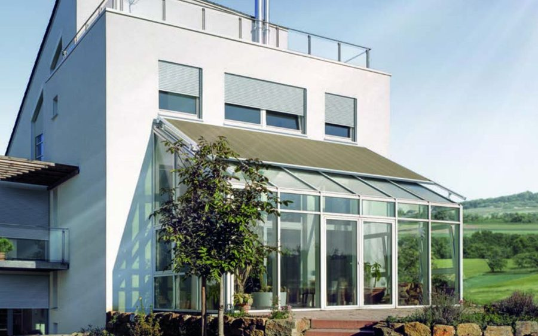
Wintergartenmarkise Climara W19
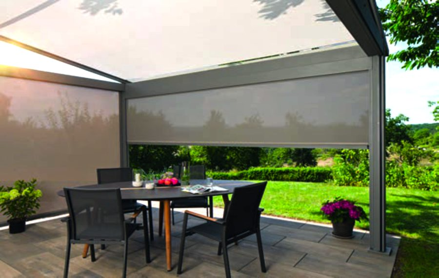
Senkrechtmarkise mit easyZIP-Führung
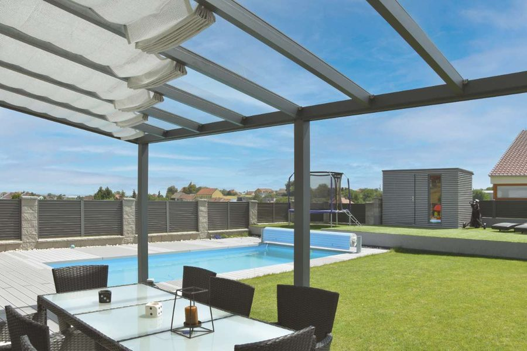
Sonnensegel nach Maß
Alle Modelle werden individuell vermessen und montiert. Lassen Sie sich unverbindlich beraten, welche Markise zu Ihrem Zuhause passt.
Ihr nächster Schritt
Jetzt kostenlos beraten lassen
Wir kommen zu Ihnen in den Westerwald – Montabaur, Neuwied, Altenkirchen und Umgebung. Unverbindlich, persönlich, ohne Wartezeit.
Anfrage starten →